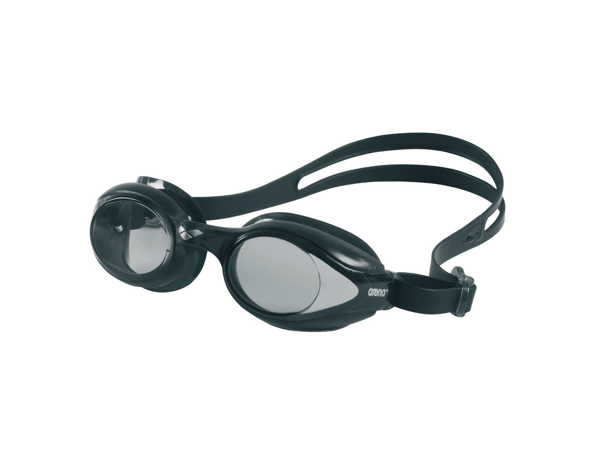
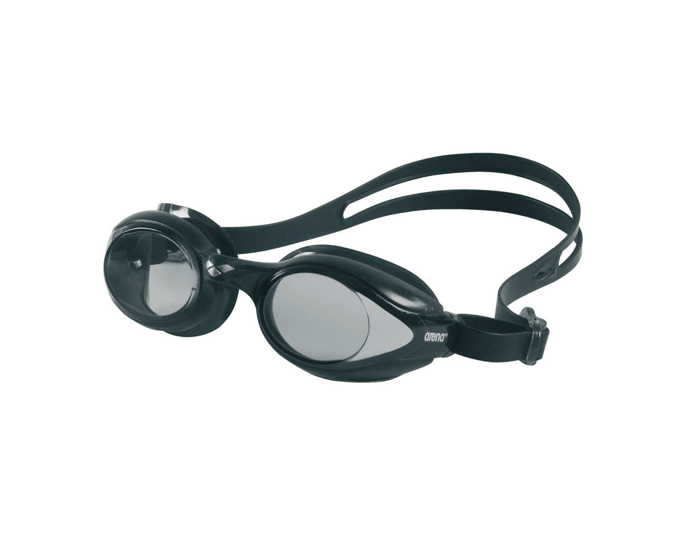

About Me
 

Welcome to my profile! My name is Slavcho Mickovski, born on 16th June in the year 2003. I'm a passionate individual with a wide range of interests and pursuits. One of my greatest passions is basketball, and I have a deep love for the game. I enjoy both watching and playing basketball, and it has become a significant part of my life.
Swimming is another sport that holds a special place in my heart. I have been involved in swimming for several years, participating in numerous competitions. Through hard work and dedication, I have even achieved first place in a few of these competitions. The thrill of racing through the water and the sense of accomplishment from improving my technique motivate me to continue pushing my limits in the pool.
Aside from sports, I have a strong inclination towards exercising and maintaining a healthy lifestyle. I believe in the importance of physical fitness and its positive impact on overall well-being. Engaging in various forms of exercise energizes me and helps me stay focused and productive in other aspects of life.
Currently, I am a first-year undergraduate student pursuing a degree in Computer Science and Engineering. Programming has become my ultimate passion. The ability to create and solve problems through code fascinates me. I constantly seek opportunities to enhance my programming skills and delve deeper into the world of software development.
Overall, I am an enthusiastic individual with a drive to excel in both my personal and academic pursuits. I embrace challenges and strive to continuously learn and grow. Through my love for basketball, swimming, exercising, and programming, I aim to make a positive impact on the world around me.